THE PHOTO COLLECTION
我们的婚纱相册
把心动，留在这一刻。
点击照片，可放大查看
把平凡的日子，过成纪念。放大 ＋靠近你，就是幸福。放大 ＋目光所及，是你。放大 ＋并肩，走向每一个明天。放大 ＋牵起的手，就不再放开。放大 ＋相伴的每一天，都值得珍藏。放大 ＋


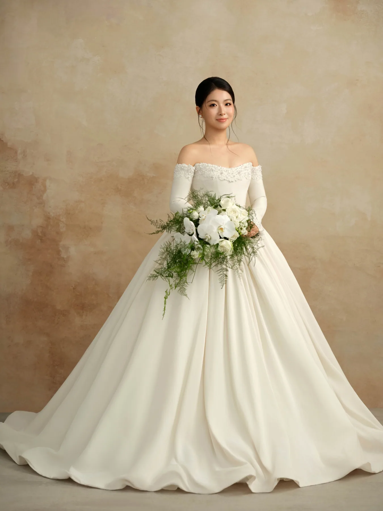
温柔留在光里。放大 ＋花与白纱，都是你的模样。放大 ＋此刻的笑意，写进往后的日常。放大 ＋在你的身旁，安心做自己。放大 ＋今天与往后，都有你。放大 ＋一束光，一袭白纱。放大 ＋风经过，时光停下。放大 ＋白纱轻扬，彼此相望。放大 ＋把这一刻，慢慢收藏。放大 ＋目光里的温柔。放大 ＋与你相望，便是答案。放大 ＋轻纱里的一瞬。放大 ＋笑意，是最好的纪念。放大 ＋光落在你身上。放大 ＋


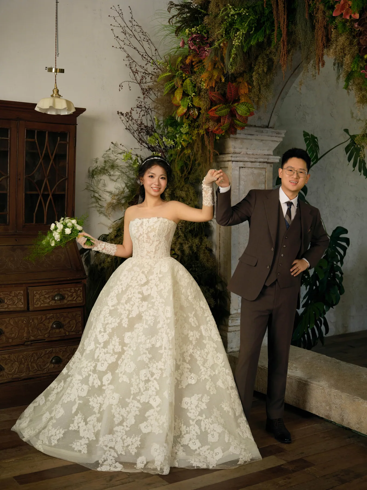
在旧时光里，遇见新的我们。放大 ＋
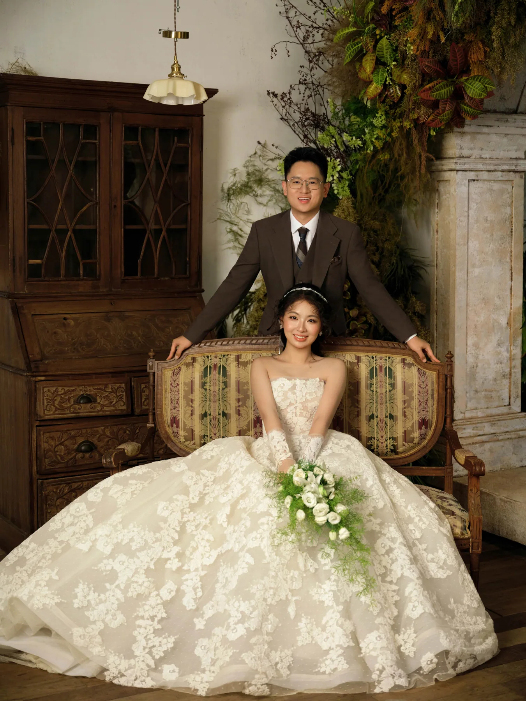
坐看日常，也坐看岁月。放大 ＋烛光与花香。放大 ＋

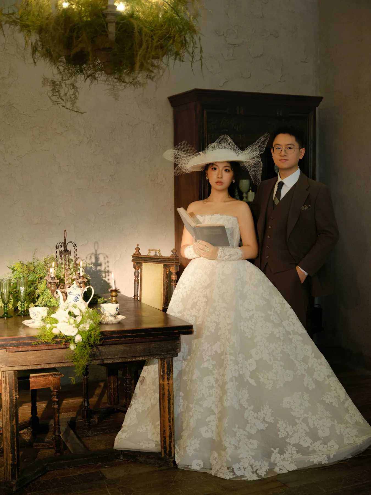
这一刻，刚刚好。放大 ＋收藏一缕柔光。放大 ＋

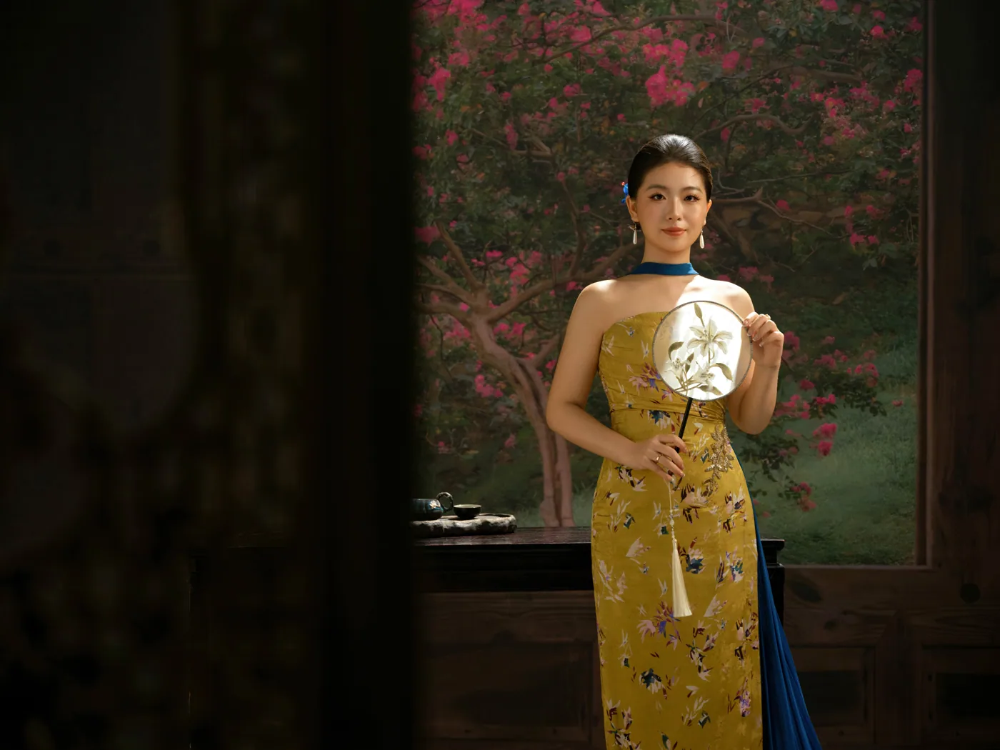
花影之间。放大 ＋一柄团扇，一眼温柔。放大 ＋相伴，是最好的风景。放大 ＋靠近一点，再靠近一点。放大 ＋把喜欢写在花里。放大 ＋中式庭院里的欢喜。放大 ＋心动，是每一次回望。放大 ＋一盏茶的时光。放大 ＋把日子，过得从容。放大 ＋并肩的样子。放大 ＋


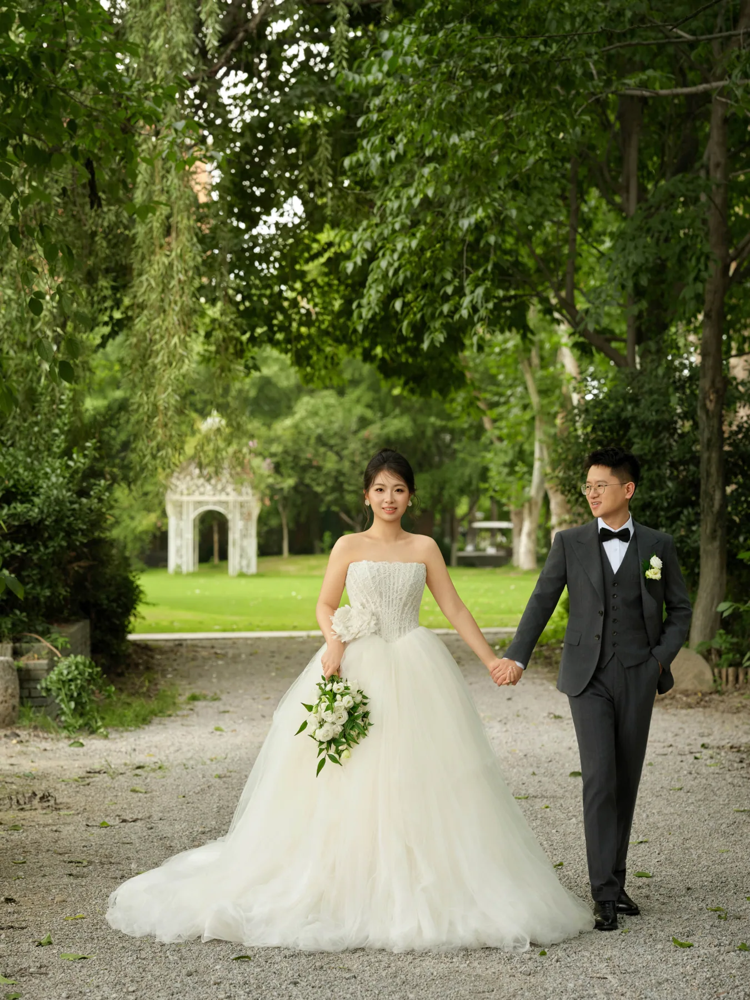
绿荫下，与你牵手。放大 ＋
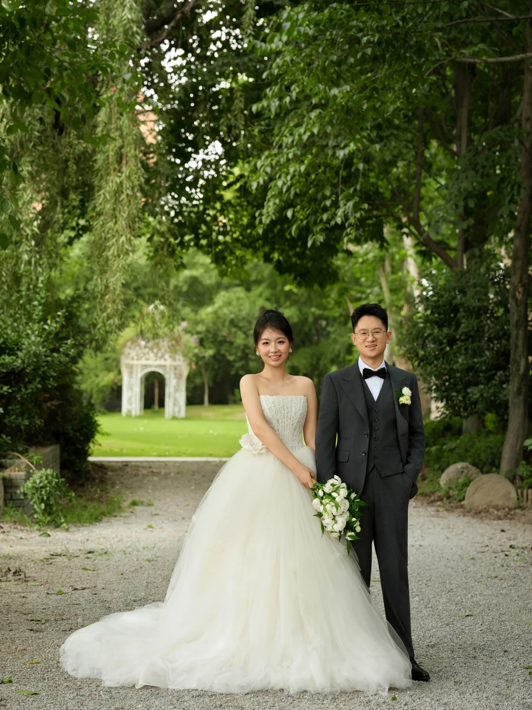
花园里的我们。放大 ＋
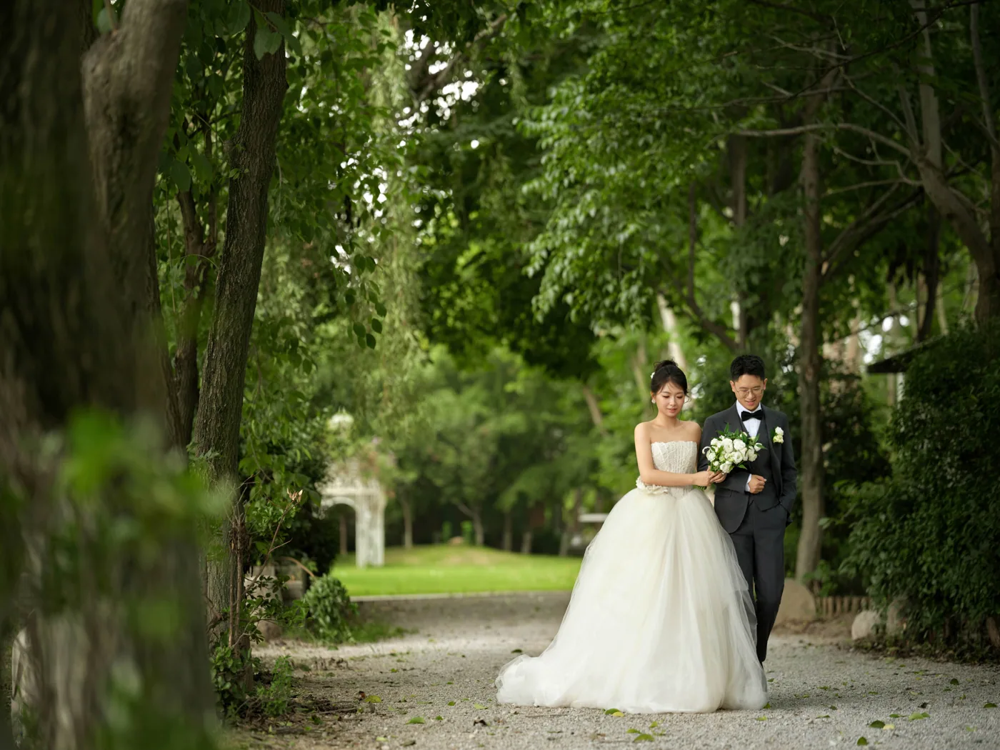
停在这一片绿意里。放大 ＋一束花，两个人。放大 ＋

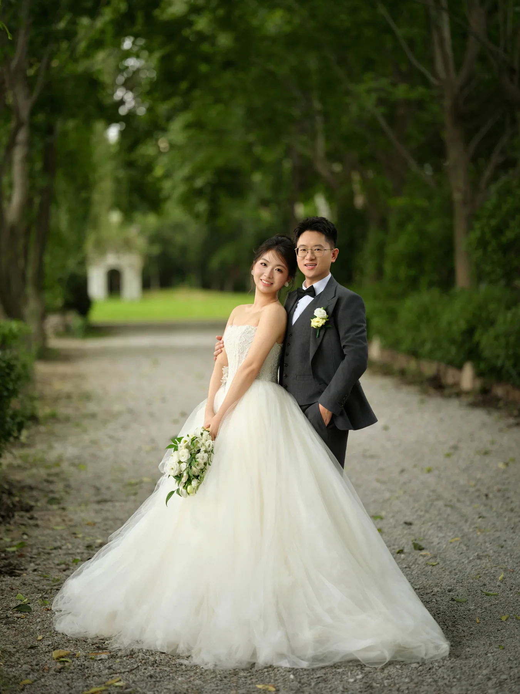
笑着，靠近你。放大 ＋有风，有花，有你。放大 ＋白纱与你。放大 ＋回眸的那一刻。放大 ＋在风里，说爱你。放大 ＋


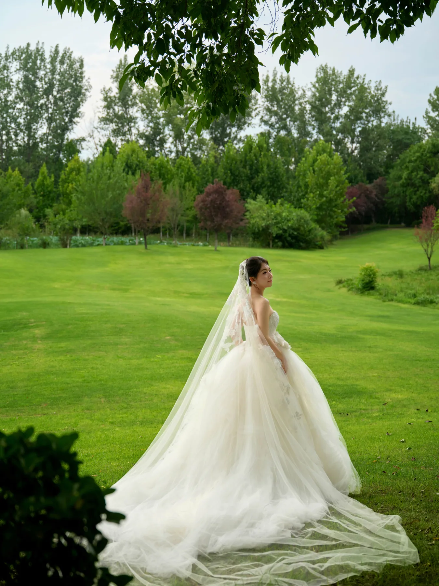
春风停在裙摆上。放大 ＋
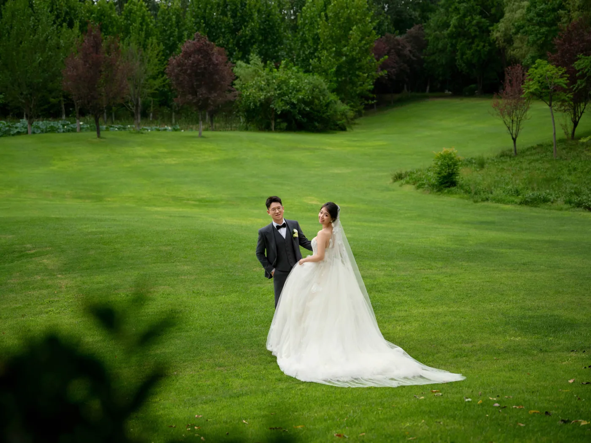
在一起，就是风景。放大 ＋
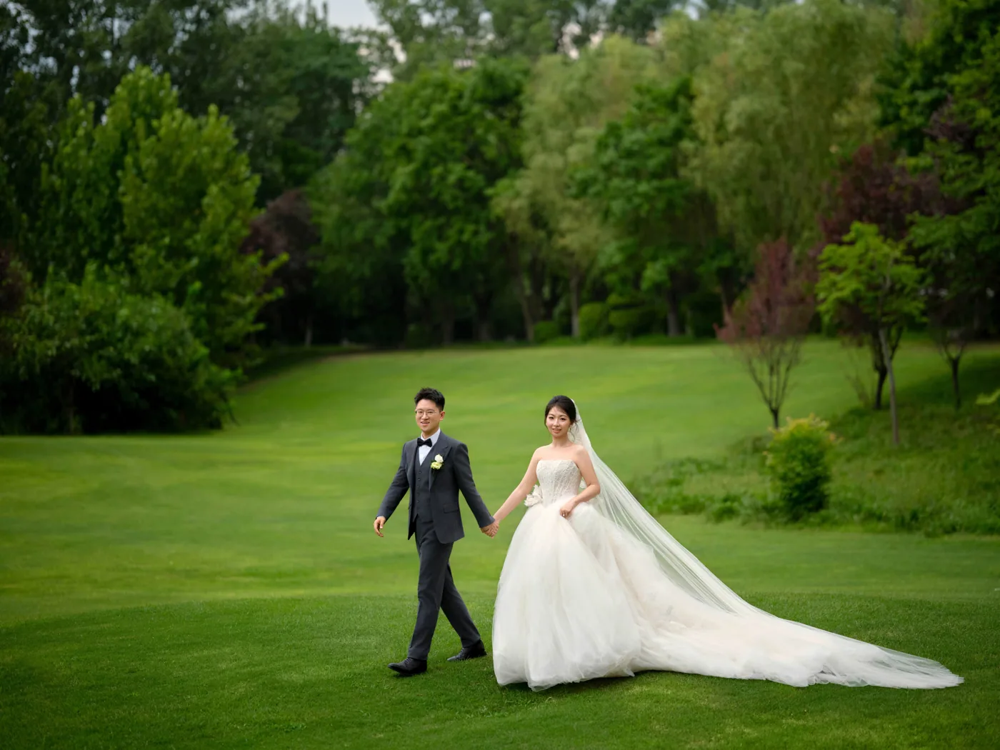
草地上，与你携手向前。放大 ＋同一片头纱下，只有你我。放大 ＋